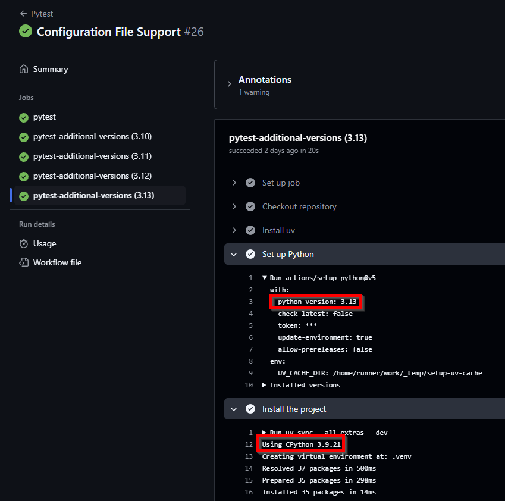

Testing a Python Package on GitHub
Testing a Python Package on GitHub
I'm quite new both to building Python packages and also to GitHub actions so here I describe setting up a workflow to run tests on a Python package across Windows, Ubuntu, and macOS and across multiple Python versions with combined code coverage using GitHub actions and uv.
TLDR
I learnt how to setup a cross platform / cross Python version workflow with coverage while setting up the GitHub repo for my CLI tool uv-secure. You can see the final GitHub action workflow I created for that project in pytest.yml but beware this workflow depends on some configuration specified in other files of this repo that I will go into in this post.
My project setup
I created my package using uv init with the lib option:
uv init --lib
To create the skeleton package directory structure. The default uv init command is more intended for creating scripts whereas if you want a Python project that will build and install as a package then you need the --lib option. You can read more detail in the uv init docs
That creates a repo structure with a
src / package_name
structure, and I personally like to add a top level tests directory (you need to do this manually - uv won't create a tests directory for you) and then duplicate the directory structure for the src directory for my tests structure, e.g.
tests / package_name
Creating initial GitHub workflow
The uv documentation has a specific section for GitHub integration which I found to be an excellent starting point for setting up a GitHub action. I started by copying their pytest example and later tried to incorporate their other example of using multiple Python versions.
First gotcha regarding Python versions
I made a few mistakes in my initial attempt to get multiple Python versions working that were a bit painful to figure out, specifically:
I wanted to target Python 3.9 minimum and every major version after that up to Python 3.13. Given I was targeting 3.9 minimum I had a .python-version file in my repo with the content:
3.9
which I had checked into source control. I used the setup-python action as the uv docs mentioned that can be faster for setting up Python and passed the Python version to that using the test matrix:
- name: Set up Python
uses: actions/setup-python@v5
with:
python-version: ${{ matrix.python-version }}
I saw the setup-python action installing the correct Python, so I assumed it was running the tests against Python 3.9, 3.10, 3.11, 3.12, and 3.13... but unbeknownst to me uv was reading the .python-version file in each case and creating a Python 3.9 environment in each of the VMs even though actions/setup-python had installed the correct Python.

I didn't actually notice this issue until a later release when I tried to combine test coverage reports across my Python versions and noticed they were all giving identical results so coverage ignored all but one. The solution in this case was to remove the .python-version file from source control - I still kept a local copy but added it to the repo .gitignore file. Alternatively don't use the setup-python action and just follow the uv documentation example where uv installs Python itself.
The more general learning I got was to take the time to inspect the action output more closely for each step as you can see from the screenshot the problem was easy to spot - but only if you expand and look at the detailed output for each step.
Adding Code Coverage Support
There's several SaaS services for taking output from coverage in Python and tracking test coverage over time such as Codecov or coveralls both of which offer free (maybe with limitations) support for open source projects. However, I wanted to get some basic test coverage reporting that would work without using those services (yet) so I implemented some simpler action steps to take the coverage report from coverage and simply add that as a comment to the pull request.
The configuration for those steps looked like this in the end:
- name: Run coverage report
run: uv run coverage report > coverage_summary.txt
- name: Prepare Comment Body
run: |
echo '### Coverage Report' >> comment_body.md
echo '```txt' >> comment_body.md
cat coverage_summary.txt >> comment_body.md
echo '' >> comment_body.md
echo '```' >> comment_body.md
- name: Find Coverage Report Comment
id: find-comment
uses: peter-evans/find-comment@v3
with:
issue-number: ${{ github.event.pull_request.number }}
comment-author: github-actions[bot]
body-includes: '### Coverage Report'
- name: Create or Update Coverage Comment
uses: peter-evans/create-or-update-comment@v4
with:
token: ${{ secrets.GITHUB_TOKEN }}
issue-number: ${{ github.event.pull_request.number }}
body-path: comment_body.md
comment-id: ${{ steps.find-comment.outputs.comment-id }}
edit-mode: replace
I had some trial and error and issues with the echo calls in the Prepare Comment Body step as I found I needed to use single tick quotes do get some of the echo calls to work (they would give really confusing errors with different quotes).
I learnt of Peter Evan's really handy actions for creating comments, although it took me a while to identify adding markdown comments worked best if saved to a file and added via the body-path argument in the create-or-update-comment action. I had many failed attempts trying to use ChatGPT's help to send the comment text via an environment variable that just caused so many issues.
At first each change to a pull request would create a new coverage comment which got messy pretty quickly but Peter had a nice example of combining his find-comment and create-or-update-comment actions so that you could create an initial comment for the test coverage and keep overwriting that same comment after that with new test coverage results as new commits were pushed to the PR.
The last gotcha I ran into with using the create-or-update-comment action was the default job permissions aren't adequate for jobs to change the pull request itself so you need to explicitly set the job permissions like this:
jobs:
my_job_name:
runs-on: ubuntu-latest
permissions:
contents: read
pull-requests: write
Adding multi-Python version coverage report
I initially had multiple Python versions running and I just triggered test coverage for one of the Python versions as a separate step. This was unsatisfactory though as there was conditional importing happening in my package, e.g. toml parsing was added to the standard library in later versions of Python but earlier versions required you to import a separate package, e.g.
if sys.version_info >= (3, 11):
import tomllib as toml
else:
import tomli as toml
and it was disappointing running coverage for just one Python version would always omit one of these import lines. I learnt Coverage.py CLI has a combine command so you can run coverage for different environments and combine the results into a single coverage result.
I had some initial misunderstandings around the combine command as I thought it might combine one of the output files from running coverage but it actually wants to combine the .coverage SQLLite db that coverage produces when running. Another gotcha that I ran into was when running coverage with an intent to combine results the coverage docs mention using the:
--parallel-mode
option or configuration to name the .coverage to include extra details to ensure each .coverage file is named uniquely and I tried to follow that advice. I had an issue since I was using the pytest-cov package to integrate pytest with coverage to run the tests with coverage, and it appears to set the parallel option for its own purposes so my attempts at setting that configuration never seemed to change the name of the .coverage output db.
One possible solution would be to get coverage to run pytest without using pytest-cov ( although if you use the coverage feature in recent versions of the VSCode Python extension that depends on pytest-cov so you may want to keep that dependency even if you don't use it in CI).
In the end though it wasn't an issue because each test matrix instance runs in its own VM so you don't need to worry about .coverage files overwriting each other - as long as you use the upload-artifact action to upload them with different names there's no issue.
In the test run step I used the upload-artifact like so:
- name: Upload coverage artifact
uses: actions/upload-artifact@v4
with:
name: coverage-${{ matrix.python-version }}
path: .coverage
include-hidden-files: true
and a separate dependant job would collect and combine those individual test artifacts like so:
- name: Download all coverage artifacts
uses: actions/download-artifact@v4
with:
path: coverage
- name: Combine coverage data
run: |
uv run coverage combine coverage/3.*/.coverage
uv run coverage report > coverage_summary.txt
Final step - adding multiple platform coverage support
In the same way I had conditional imports that imported different libraries depending on the Python version - I also ended up needing conditional imports to handle different operating system specific dependencies, e.g. for optimised async event loops uvloop is often recommended but that only works on Linux and macOS (and I hate it when Windows is neglected by Python packages since that is the OS I work in the most). Once again I need a different conditional import on Windows instead of uvloop I use winloop and the code looks like this:
if sys.platform in ("win32", "cygwin", "cli"):
from winloop import run
else:
from uvloop import run
If you're interested the project dependencies section of my pyproject.toml for handling those different import conditions looks like this:
dependencies = [
'tomli; python_version < "3.11"',
"uvloop>=0.21.0 ; sys_platform != 'win32'",
"winloop>=0.1.7 ; sys_platform == 'win32'",
]
so now the next issue is the GitHub matrix must be expanded to cover Linux, macOS, and Windows and all the major Python versions which now looks like this:
name: Pytest
on:
pull_request:
jobs:
pytest-with-coverage:
runs-on: ${{ matrix.os }}
strategy:
matrix:
os: ["ubuntu-latest", "macos-latest", "windows-latest"]
python-version: ["3.9", "3.10", "3.11", "3.12", "3.13"]
One minor gotcha is don't forget to quote the Python version numbers - I tried unquoted versions and Python 3.10 was trying to install Python 3.1!
The big gotcha happened though when I tried my old run the combine across my multi-platform artifacts. The tests and individual coverage ran just fine but the combine step returned an error status code but no meaningful / actionable error. I spent a lot of time trying to reproduce the combine problem locally with the CI generated artifacts and adding extra temporary debug steps into the pipeline before I determined the issue was each GitHub CI ran the tests in a different relative path in their respective VMs and coverage didn't recognise these different source paths as being the same. Specifically the VM specific paths were:
- ubuntu-latest ran in: /home/runner/work/
- macos-latest ran in: /Users/runner/work/
- windows-latest ran in: D:/a/
I had run into this coverage directory mapping issue before when trying to run coverage in PyCharm with a Docker environment because of the different (and very non-obvious) absolute paths it creates for the same project directory.
In short though you need to configure coverage to recognise all these absolute directories as the same path. Which I did in the pyproject.toml like so:
[tool.coverage.paths]
source = [
"src",
"/Users/runner/work/uv-secure/uv-secure/src",
"/home/runner/work/uv-secure/uv-secure/src",
"D:/a/uv-secure/uv-secure/src"
]
tests = [
"tests",
"/Users/runner/work/uv-secure/uv-secure/tests",
"/home/runner/work/uv-secure/uv-secure/tests",
"D:/a/uv-secure/uv-secure/tests"
]
You can read about other ways to configure these path mappings for coverage in its path docs
Finally after all that trial and error I was able to get a single coverage report workflow that covered all the major OSes and Python versions I wanted to cover.
Related work and Summary
By chance while developing this I did discover the cookiecutter-uv repo which covers a lot of the same issues (but doesn't as far as I can see deal with combining the code coverage).
Feel free to look at and re-use the final workflow file in your own repos which is here pytest.yml
I leaned on ChatGPT a lot which was good at suggesting the initial workflow configuration, and it helped a lot with diagnosing the action output (by pasting in the workflow yaml and the actual action log output) - but ChatGPT definitely lead me into some dead ends where I needed to research and solve the problem myself (like the proper way to use the create-or-update-comment action).
I've definitely found developing GitHub actions/workflows a bit painful as I spam push commits with lots of trial and error until I get them to work right. I haven't tried but have heard of the act tool that can apparently let you test GitHub actions locally before pushing them. I'd be interested to hear how well that has worked for other developers and what limitations it might have.